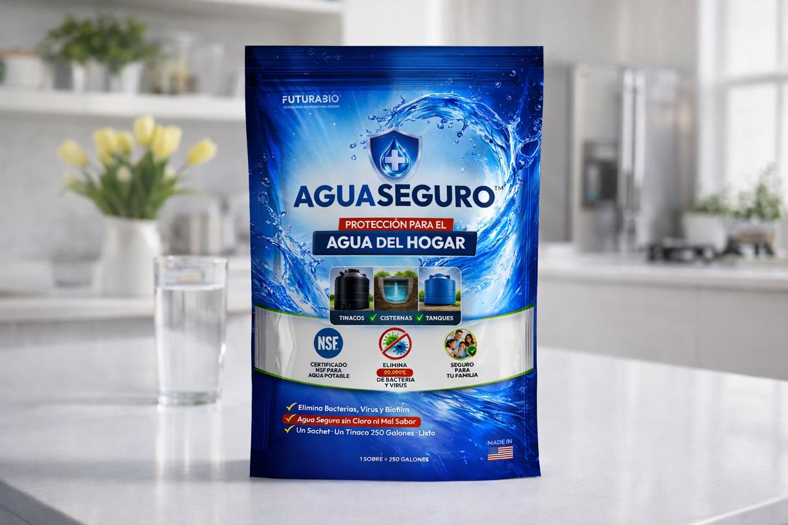
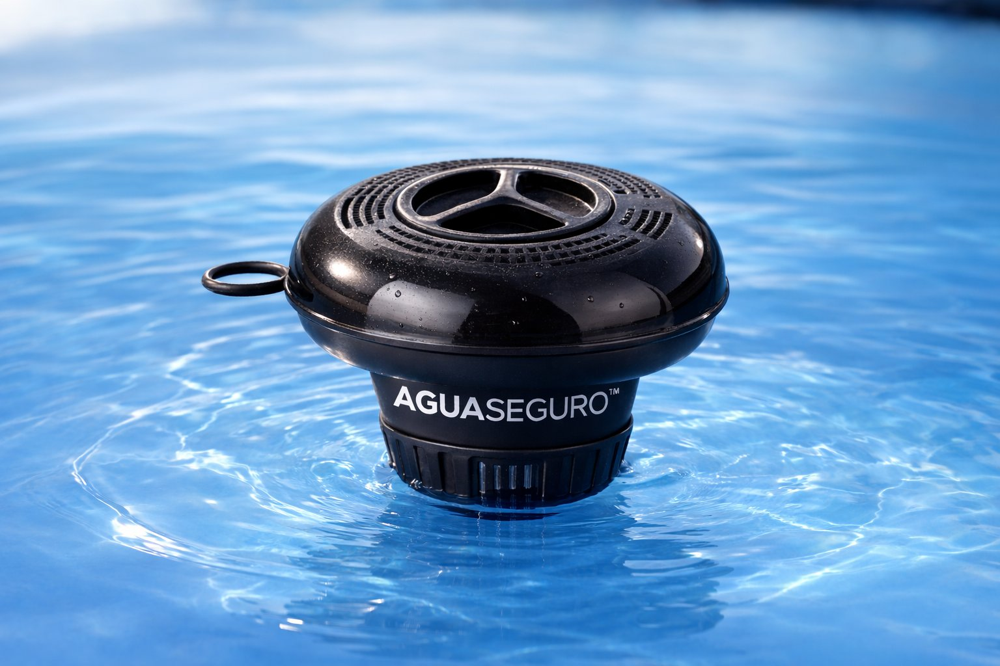
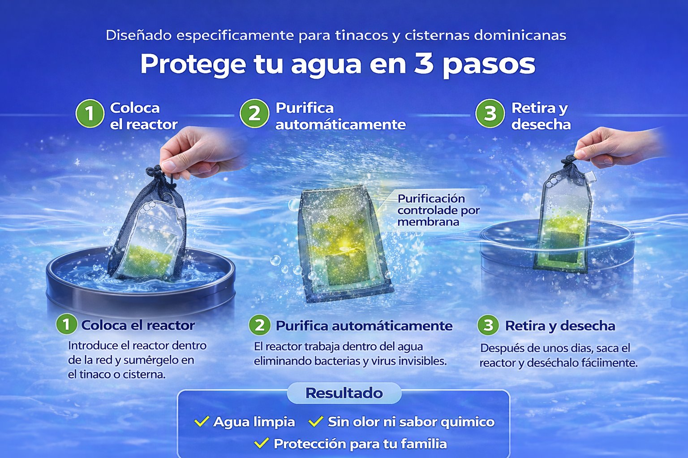
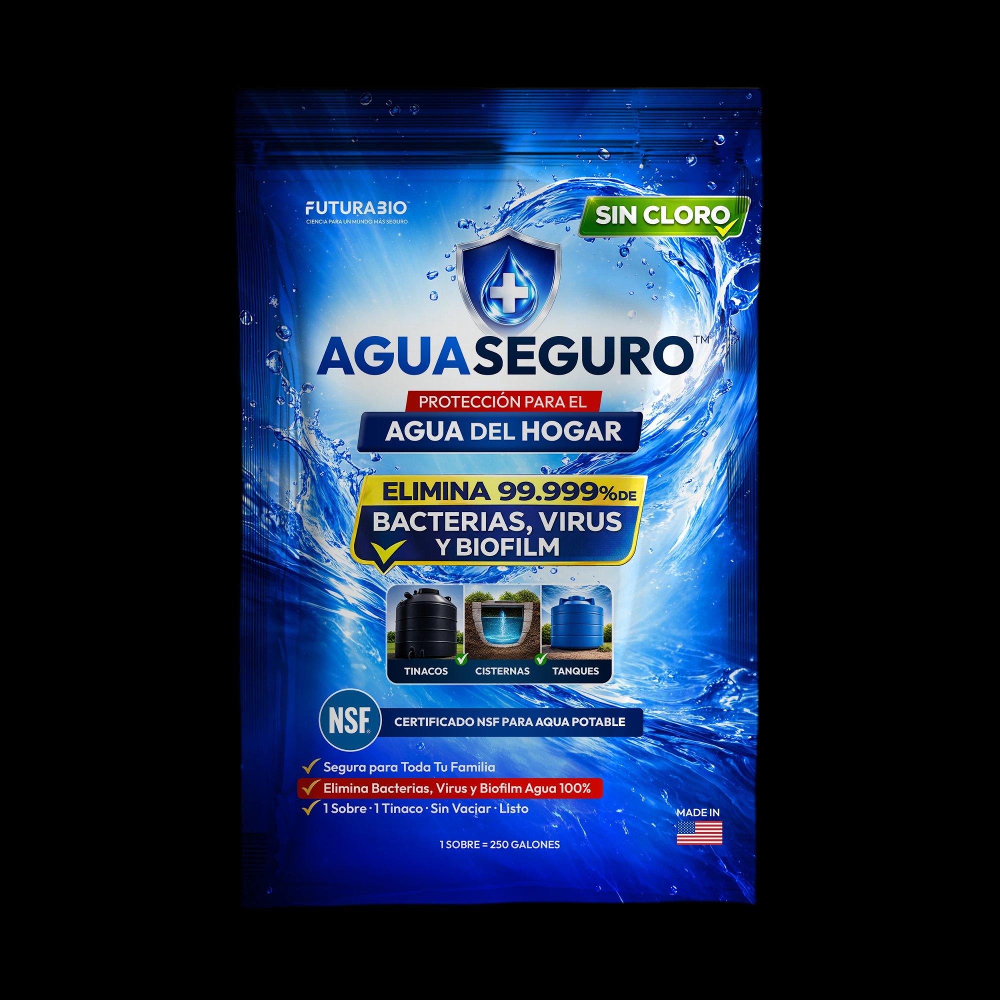

El agua en tinacos y cisternas acumula bacterias, virus y biofilm invisible. AguaSeguro™ los elimina con tecnología microreactor. Solo introdúcelo, déjalo actuar y retíralo.

En República Dominicana casi todos los hogares dependen de tinacos y cisternas. El agua estancada se contamina rápidamente, y el biofilm en las paredes del tanque y las tuberías hace que el cloro convencional no sea suficiente para protegerla.
AguaSeguro™ utiliza una membrana microreactor que trabaja directamente dentro del agua de tu tinaco. Introdúcelo, déjalo actuar y retíralo. Sin medir, sin mezclar, sin residuos.
Coloca el sachet microreactor dentro de la pequeña red incluida antes de introducirlo en el tinaco. Cuando termine, jala la red y retira el sachet limpiamente sin tocar el agua.
Nuestro flotador mantiene el microreactor visible en la superficie del tinaco. Fácil de ver y fácil de recuperar dentro de las 4 horas recomendadas. Se adquiere por separado.


El microreactor AGUASEGURO™ utiliza tecnología de membrana avanzada para purificar el agua directamente desde adentro. Certificado NSF, fabricado en USA.

FuturaBio™ desarrolló la primera tecnología portátil capaz de generar ClO₂ ultrapuro de forma segura y controlada, sin equipos industriales ni químicos peligrosos.
Durante décadas, las aplicaciones de ClO₂ estuvieron limitadas a plantas industriales de tratamiento de agua y operaciones a gran escala, porque generarlo requería maquinaria enorme.
FuturaBio™ cambia eso. Por primera vez, ClO₂ ultrapuro puede generarse en un sistema compacto activado con agua, llevando los beneficios de esta tecnología avanzada a cualquier hogar.
A diferencia del cloro convencional, bacterias, virus, hongos y esporas no pueden desarrollar tolerancia al ClO₂ con el tiempo. Siempre es igual de efectivo.
El ClO₂ es más selectivo químicamente que el cloro, el ozono y los peróxidos. Destruye microorganismos sin quemar ni corroer superficies, y sin dejar residuos en materiales ni en la piel.
El ClO₂ es una molécula neutra, lo que le permite infiltrarse en el biofilm y destruir los microorganismos internos. Su potencia de oxidación es 2.5 veces mayor que la del cloro, sin generar trihalometanos (THMs) ni ácidos haloacéticos (HAAs), clasificados por la EPA y la OMS como probables cancerígenos a exposición prolongada.
El cloro convencional no puede destruir el biofilm que crece en las paredes de tu tinaco. AguaSeguro™ sí puede, sin dejar rastro.
| AGUASEGURO™ ClO₂ | Cloro / Pastillas | |
|---|---|---|
| Elimina bacterias | ✓ | Parcialmente |
| Elimina virus | ✓ | Parcialmente |
| Destruye el biofilm | ✓ | ✗ |
| Sin sabor a químico | ✓ | ✗ |
| Sin olor desagradable | ✓ | ✗ |
| Dosis exacta para tu tinaco | ✓ | ✗ |
| Diseñado para tinacos dominicanos | ✓ | ✗ |
| Estándar OMS agua potable | ✓ | ✗ |
| Sin subproductos cancerígenos (THMs/HAAs) * | ✓ | ✗ |
| Sin residuos en piel, cabello ni tuberías | ✓ | ✗ |
| Los microbios no desarrollan tolerancia | ✓ | ✗ |
| Potencia de oxidación 2.5× mayor | ✓ | ✗ |
El biofilm es una capa invisible de bacterias que se adhiere a las paredes internas de tu tinaco y a las tuberías conectadas. Se forma en días y protege a las bacterias del cloro convencional.
Una vez que existe, el cloro solo actúa sobre el agua libre. Las bacterias en las paredes del tanque y las tuberías siguen vivas y se liberan continuamente hacia el agua que consumes.
Si tu casa tiene un tinaco en la azotea, ese depósito y las tuberías conectadas acumulan bacterias y biofilm. El formato adecuado para tu tamaño de tinaco mantiene limpio todo el sistema.
Las cisternas centrales almacenan agua más tiempo. Mayor riesgo, mayor necesidad de desinfección continua para todos los residentes.
Los niños son más vulnerables al agua contaminada. Proteger el tinaco es proteger su salud desde la primera etapa de vida.
Cuando el agua llega solo 2–3 veces por semana, el riesgo de contaminación es mayor. AguaSeguro™ comienza a actuar desde el momento en que lo introduces.
Las tormentas pueden comprometer las redes de agua. Tu tinaco también puede estar contaminado sin que lo notes.
El agua es parte de tu operación. Protegerla es también proteger a tus clientes, tu reputación y tu negocio.
AguaSeguro™ funciona en cualquier momento, pero hay situaciones donde es especialmente importante actuar.
Dos veces al mes para protección óptima, o al menos una vez al mes. Más efectivo y económico que una limpieza profesional. Más un tratamiento trimestral para mantenimiento profundo de biofilm en tanque y tuberías.
Al regresar el agua tras un corte prolongado, trata antes de consumir. Puede arrastrar contaminantes al reingresar.
Las tormentas comprometen las redes. Si el agua llegó turbia o hubo interrupciones, trata el tinaco antes de usar.
Los tinacos nuevos tienen residuos de fabricación. Haz siempre una primera desinfección antes del primer uso.
Si el tinaco estuvo días sin uso y el agua quedó estancada, el biofilm crece rápido. Trata antes de usar al regresar.
Diarrea frecuente puede ser señal de agua contaminada. Revisa y trata el tinaco de inmediato.
Actúa contra E.coli, Salmonella, Shigella y otras bacterias que causan enfermedades gastrointestinales comunes en el país.
El biofilm se acumula en las paredes del tanque y las tuberías. AguaSeguro™ penetra y elimina esa capa invisible en todo el sistema. Los microorganismos no desarrollan tolerancia al ClO₂ con el tiempo.
AguaSeguro™ no deja residuos químicos en el agua ni en las superficies. Sin trihalometanos. Sin efectos en la piel ni el cabello. pH neutro. El agua sabe a agua, limpia y segura.
Cada formato está calibrado para el rango de galones de tu tanque. Sin adivinar, sin riesgo de sobre-tratar.
Formulado para cumplir con los estándares de seguridad de la Organización Mundial de la Salud para agua potable.
Una limpieza profesional cuesta RD$1,500–3,000 por visita. AguaSeguro™ da protección continua mensual por mucho menos.
Cada microreactor AguaSeguro™ está calibrado para un rango específico de galones. Elige el formato que corresponde a tu tinaco, cisterna o tanque.
Por el momento vendemos directamente a través de WhatsApp. Pronto también disponible en supermercados, ferreterías y colmados en toda la República Dominicana.
Por el momento vendemos directamente. Escríbenos, te confirmamos disponibilidad, te enviamos los datos bancarios, realizas la transferencia y coordinamos la entrega. Rápido, seguro y sin intermediarios.
Sí. AguaSeguro™ está prediseñado para trabajar con precisión dentro del rango de galones de cada formato, garantizando agua segura sin necesidad de medir ni ajustar nada. Completamente segura para beber, cocinar y uso diario para toda la familia.
Lo recomendado es retirar el microreactor dentro de las primeras 4 horas para mejores resultados. Si lo dejas hasta 24 horas no hay problema, pero el tratamiento ya estará completo mucho antes. Simplemente retíralo con la red o el flotador y descártalo.
Lo ideal es usarlo dos veces al mes para mantener el agua siempre protegida. Como mínimo, una vez al mes para buenos resultados. Adicionalmente, recomendamos un tratamiento trimestral para la reducción de biofilm y mantenimiento profundo del tanque y las tuberías.
Las pastillas de cloro no eliminan el biofilm en las paredes del tinaco. AguaSeguro™ es un microreactor de membrana. No se disuelve: trabaja de forma controlada desde adentro, destruye el biofilm y se retira limpiamente cuando termina. Sin residuos en el agua.
Sí. AguaSeguro™ está disponible en tres formatos: hasta 250 gal, 275–550 gal y 550–800 gal, para tinacos de techo, cisternas subterráneas y tanques residenciales. Para tanques de 1,000+ galones, contáctanos para una recomendación personalizada.
No. A diferencia del cloro, AguaSeguro™ no deja sabor ni olor detectable en el agua. El agua sabe igual, solo limpia y segura.
Sí. AguaSeguro™ está diseñado para ser completamente seguro para toda la familia, incluyendo niños, bebés y mascotas. Cada formato está calibrado para el rango de galones indicado, así que no hay riesgo de sobre-tratar el agua.
Hay dos opciones: (1) Coloca el sachet dentro de la pequeña red incluida antes de introducirlo. Lo recomendado es retirarlo dentro de las 4 horas. Solo jala la red. (2) Usa el flotador opcional de AguaSeguro™, que mantiene el sachet visible en la superficie para recuperarlo aún más fácilmente. Ninguna opción requiere tocar el agua ni vaciar el tinaco.
Aceptamos transferencia bancaria. Escríbenos por WhatsApp al 809-805-0900, te enviamos los datos de la cuenta, realizas la transferencia desde tu banco y nos envías una foto del comprobante de depósito. Coordinamos la entrega o el punto de retiro una vez confirmado el pago.
No es necesario para el uso regular. Si el tinaco lleva mucho tiempo sin limpieza o tiene sedimento visible, se recomienda una limpieza física primero. Después, introduce el microreactor para la desinfección completa del tanque y las tuberías.
Un sachet. Un tinaco. Listo. La protección más simple y efectiva para el agua de tu hogar.